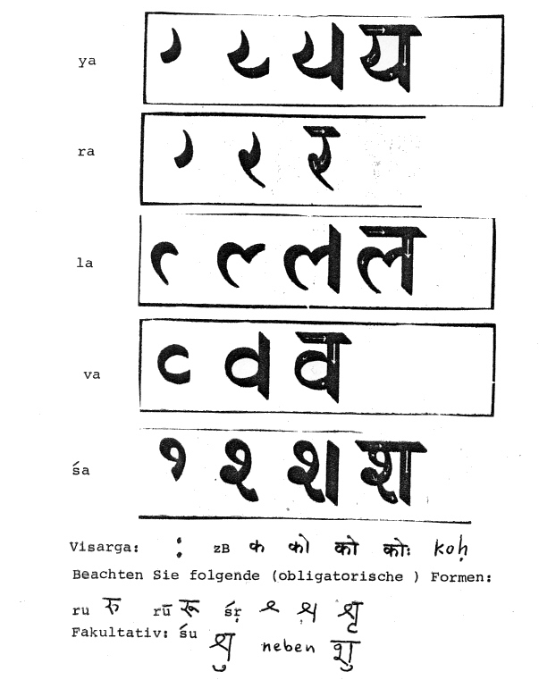

mailto:payer@payer.de
Zitierweise | cite as:
Payer, Alois <1944 - >: Sanskritkurs. -- Devanāgarī = देवनागरी. -- 3. Schriftübung 3. -- Fassung vom 2008-11-17. -- URL: http://www.payer.de/sanskritkurs/schrift03.htm
Erstmals hier publiziert: 2008-11-17
Überarbeitungen:
Anlass: Lehrveranstaltungen 1980 - 1984
©opyright: Dieser Text steht der Allgemeinheit zur Verfügung. Eine Verwertung in Publikationen, die über übliche Zitate hinausgeht, bedarf der ausdrücklichen Genehmigung des Verfassers
Dieser Text ist Teil der Abteilung Sanskrit von Tüpfli's Global Village Library
Falls Sie die diakritischen Zeichen nicht dargestellt bekommen, installieren Sie eine Schrift mit Diakritika wie z.B. Tahoma.
Die Devanāgarī-Zeichen sind in Unicode kodiert. Sie benötigen also eine Unicode-Devanāgarī-Schrift.

A) Schreiben Sie in Devanāgarī:
śivaḥ vedaḥ kaviḥ guruḥ paśuḥ devatā devī kalaśa vayaḥ yaśo śaraṭa paraśa śataśaḥ daśaśata diva kṛś yātu kaikeyī coro śṛta rūpaka roga yoga yuj yadā rāja rujati rocate lulopa loḍayitṛ
B) Lesen und transliterieren Sie:
देवः शिवः | गुरुः कविः | देवी | वेद | लोको | शृत | रजः | योगी | वदति | वलो | लोचयति | लोकपालाः | युगल | यावत् | शरः | शशी ||
Zu Lektion 3